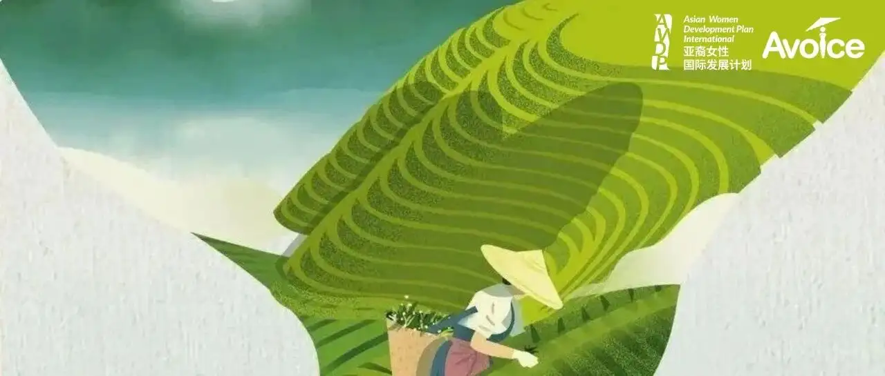
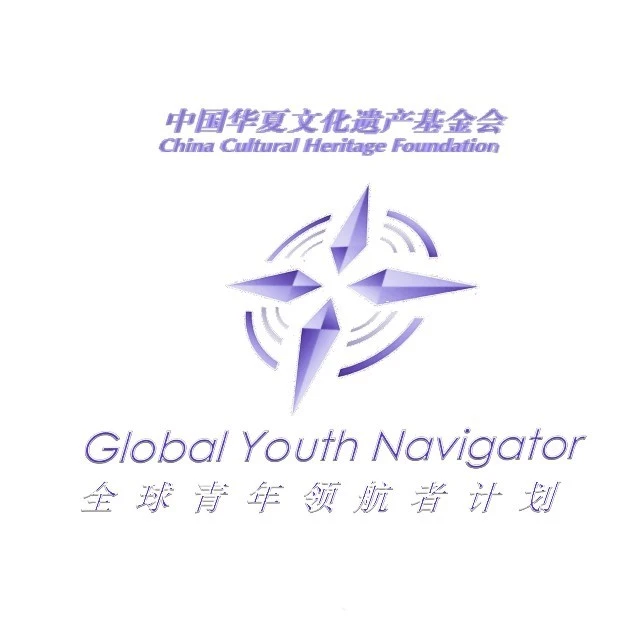
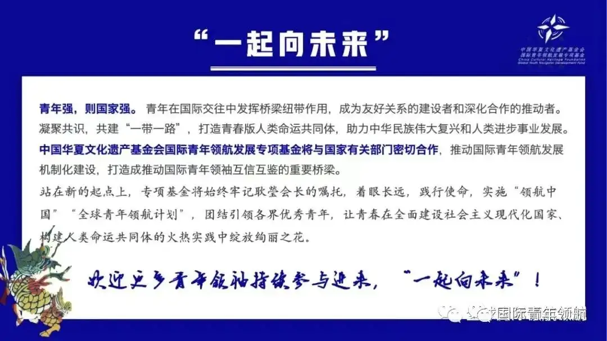
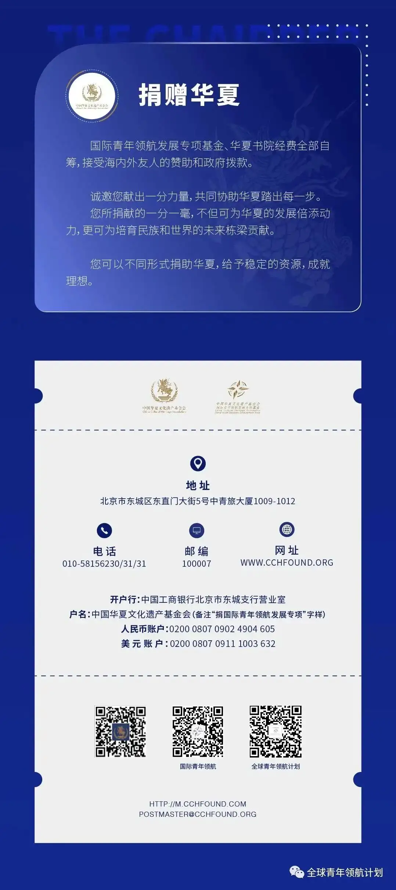
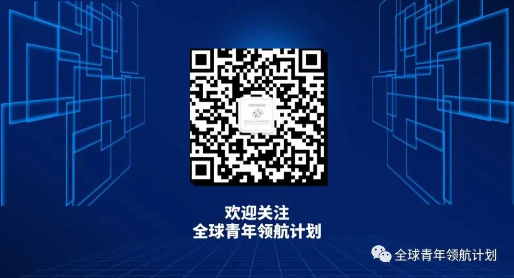

以下文章来源于全球青年领航计划 ，作者国际青年领航

汇聚国际青年领袖，促进青年精英互动。 凝聚新时代国际青年共识，建设国际青年共同体，为人类命运共同体贡献青春智慧和力量。 全球共识，人类情怀，华夏精神，青春领航。


基金会副秘书长、国际青年领航文化传承项目组组长苏润表示，该计划将构建青年文化交流网络，助力中华优秀传统文化“走出去”，为世界文明互鉴贡献中国智慧。
聚焦三大维度 培育茶文化传承生力军
计划围绕“人才培育、国际联动、产业创新”三大核心展开。
——人才筑基：首期面向全国绿茶、红茶、黑茶、白茶、黄茶、青茶等六大茶类核心产区，招募30至60名青年茶人代表，涵盖茶师、茶商、茶客三类群体。
——全球互联：联动涵盖哈佛、牛津等全球百所高校的全球名校青年社群共同体，择机在海外设立青年领航茶文化驿站，搭建国际青年茶文化交流通道。
——科技赋能：构建“数字茶文化基因库”，开发元宇宙茶叙空间，实现非遗技艺的数字化存证与创新表达。
国际青年领航茶文化传承项目组执行组长张子贤介绍，计划将探索传统产业转型路径，同步推动设立国际青年领航公益创投基金支持茶文化传承与乡村振兴。
严选青年先锋 构建茶文化出海矩阵
申请人需满足基础条件：年龄25至40周岁，所在产区获国家地理标志认证，具备跨文化沟通能力。专业要求分类施策：茶师，须掌握两项以上非遗技艺并持有国家级职业认证；茶商，需拥有成功商业模式创新案例；茶客，需在文化研究或新媒体传播领域具有显著影响力。
计划将打造“国际茶文化走廊”，每年组织跨国巡展与学术交流，联动全球名校青年社群共同体举办全球茶文化主题峰会，为青年茶人搭建国际舞台。
报名通道，即日起于“全球青年领航计划”公众号开放申请，先发资料至电邮：[email protected]。评审将邀请国际非遗保护组织有关专家、跨国企业高管及文化学者联合面试。
“青年是文明传承的活力载体，我们期待通过一杯茶的故事，让世界感知中华文化的厚度与温度。”张子贤表示，项目将探索“文化价值—经济价值”双向转化模式，为全球可持续发展提供中国方案。


——长按下方二维码并识别，更多精彩等着您——
